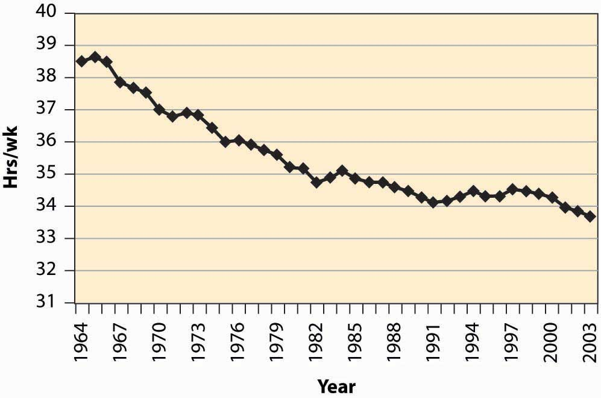

Consider a taxi driver who owns a car, a convenience store owner, or anyone else who can set his or her own hours. Working has two effects on this consumer: more goods consumption but less leisure consumption. To model this, we let x be the goods consumption, L the amount of nonwork time or leisure, and working time T – L, where T is the amount of time available for activities of all kinds. The variable L includes a lot of activities that aren’t necessarily fun—like trips to the dentist, haircuts, and sleeping—but for which the consumer isn’t paid and which represent choices. One could argue that sleeping isn’t really a choice, in the sense that one can’t choose zero sleep; but this can be handled by adjusting T to represent “time available for chosen behavior” so that T – L is work time and L is chosen nonwork activities. We set L to be leisure rather than labor supply because it is leisure that is the good thing, whereas most of us view working as something that we are willing to do provided we’re paid for it.
Labor supply is different from other consumption because the wage enters the budget constraint twice: first as the price of leisure, and second as income from working. One way of expressing this is to write the consumer’s budget constraint as px + wL = M + wT.
Here, M represents nonwork income, such as gifts, government transfers, and interest income. We drop the subscript on the price of X and use w as the wage. Finally, we use a capital L for leisure because a lowercase L looks like the number one. The somewhat Dickensian idea is that the consumer’s maximal budget entails working the total available hours T, and any nonworked hours are purchased at the wage rate w. Alternatively, one could express the budget constraint so as to reflect that expenditures on goods px equal the total money, which is the sum of nonwork income M and work income w(T – L), or px = M + w(T – L).
These two formulations of the budget constraint are mathematically equivalent.
The strategy for solving the problem is also equivalent to the standard formulation, although there is some expositional clarity used by employing the budget constraint to eliminate x. That is, we write the utility u(x, L) as
As before, we obtain the first-order condition where the partial derivatives u1 and u2 are evaluated at Note that the first-order condition is the same as the standard two-good theory developed already. This is because the effect, so far, is merely to require two components to income: M and wT, both of which are constant. It is only when we evaluate the effect of a wage increase that we see a difference.
To evaluate the effect of a wage increase, differentiate the first-order condition to obtain
Since by the standard second-order condition, if and only if that is, these expressions are equivalent to one another. Simplifying the latter, we obtain
Since the logarithm is increasing, this is equivalent to being an increasing function of L. That is, L rises with an increase in wages and a decrease in hours worked if the marginal utility of goods times the hours worked is an increasing function of L, holding constant everything else, but evaluated at the optimal values. The value u1 is the marginal value of an additional good, while the value T – L represents the hours worked. Thus, in particular, if goods and leisure are substitutes, so that an increase in L decreases the marginal value of goods, then an increase in wages must decrease leisure, and labor supply increases in wages. The case where the goods are complements holds a hope for a decreasing labor supply, so we consider first the extreme case of complements.
Example (Perfect complements): u(x, L) = min {x, L}.In this case, the consumer will make consumption and leisure equal to maximize the utility, so or
Thus, L is increasing in the wages if pT > M; that is, if M is sufficiently small so that one can’t buy all of one’s needs and not work at all. (This is the only reasonable case for this utility function.) With strong complements between goods and leisure, an increase in wages induces fewer hours worked.
Example (Cobb-Douglas):
The first-order condition gives or
If M is high enough, the consumer doesn’t work but takes L = T; otherwise, the equation gives the leisure, and labor supply is given by
Labor supply increases with the wage, no matter how high the wage goes.
The wage affects not just the price of leisure but also the income level. This makes it possible for the income effect of a wage increase to dominate the substitution effect. Moreover, we saw that this is more likely when the consumption of goods takes time; that is, the goods and leisure are complements.
Figure 13.1 Hours per week
As a practical matter, for most developed nations, increases in wages are associated with fewer hours worked. The average workweek prior to 1950 was 55 hours, which fell to 40 hours by the mid-1950s. The workweek has gradually declined since then, as Figure 13.1 "Hours per week" illustrates.
A number of physicists have changed careers to become researchers in finance or financial economics. Research in finance pays substantially better than research in physics, and yet requires many of the same mathematical skills like stochastic calculus. Physicists who see their former colleagues driving Porsches and buying summerhouses are understandably annoyed that research in finance—which is intellectually no more difficult or challenging than physics—pays so much better. Indeed, some physicists are saying that other fields—such as finance, economics, and law—“shouldn’t” pay more than physics.
The difference in income between physics’ researchers and finance researchers is an example of a compensating differentialIncome or costs that equalize different choices.. A compensating differential is income or costs that equalize different choices. There are individuals who could become either physicists or finance researchers. At equal income, too many choose physics and too few choose finance, in the sense that there is a surplus of physicists and a shortage of finance researchers. Finance salaries must exceed physics’ salaries in order to induce some of the researchers who are capable of doing either one to switch to finance, which compensates those individuals for doing the less desirable task.
Jobs that are dangerous or unpleasant must pay more than jobs requiring similar skills but without the bad attributes. Thus, oil-field workers in Alaska’s North Slope, well above the Arctic Circle, earn a premium over workers in similar jobs in Houston, Texas. The premium—or differential pay—must be such that the marginal worker is indifferent between the two choices: The extra pay compensates the worker for the adverse working conditions. This is why it is known in economics’ jargon by the phrase of a compensating differential.
The high salaries earned by professional basketball players are not compensating differentials. These salaries are not created because of a need to induce tall people to choose basketball over alternative jobs like painting ceilings, but instead are payments that reflect the rarity of the skills and abilities involved. Compensating differentials are determined by alternatives, not by direct scarcity. Professional basketball players are well paid for the same reason that Picasso’s paintings are expensive: There aren’t very many of them relative to demand.
A compensating differential is a feature of other choices as well as career choices. For example, many people would like to live in California for its weather and scenic beauty. Given the desirability of California over, for example, Lincoln, Nebraska, or Rochester, New York, there must be a compensating differential for living in Rochester; and two significant ones are air quality and housing prices. Air quality worsens as populations rise, thus tending to create a compensating differential. In addition, the increase in housing prices also tends to compensate—housing is inexpensive in Rochester, at least compared with California.There are other compensations, besides housing, for living in Rochester—cross-country skiing and proximity to mountains and lakes, for example. Generally, employment is only a temporary factor that might compensate, because employment tends to be mobile, too, and move to the location that the workers prefer, when possible. It is not possible on Alaska’s North Slope.
Housing prices also compensate for location within a city. For most people, it is more convenient—both in commuting time and for services—to be located near the central business district than in the outlying suburbs. The main compensating differentials are school quality, crime rates, and housing prices. We illustrate the ideas with a simple model of a city in the next section.